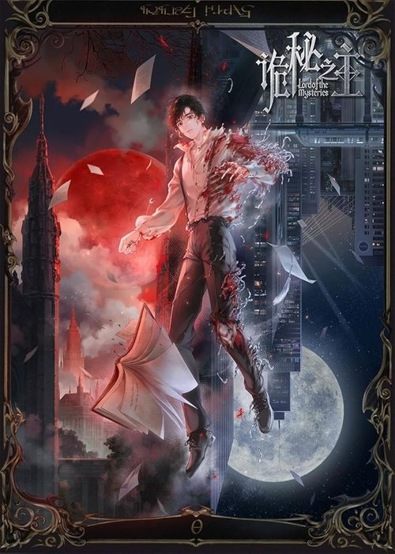

Lord of Mysteries
Watch NowIn a Victorian world of steam, dreadnoughts, and occult horrors, Zhou Mingrui awakens as Klein Moretti. He walks a razor's edge between light and darkness, entangled with warring Churches. This is the legend of unlimited potential...and unspeakable danger.
Japanese: 诡秘之主 小丑篇
Synonyms: Lord of the Mysteries, LOTM
Aired: Jun 28, 2025 to Aug 16, 2025
Duration: 35m
Status: Finished Airing
MAL Score: 8.63
Genres: Action, Fantasy, Mystery, Thriller, Isekai
Studios: B.CMAY PICTURES
Producers: China Literature Limited, Tencent Video